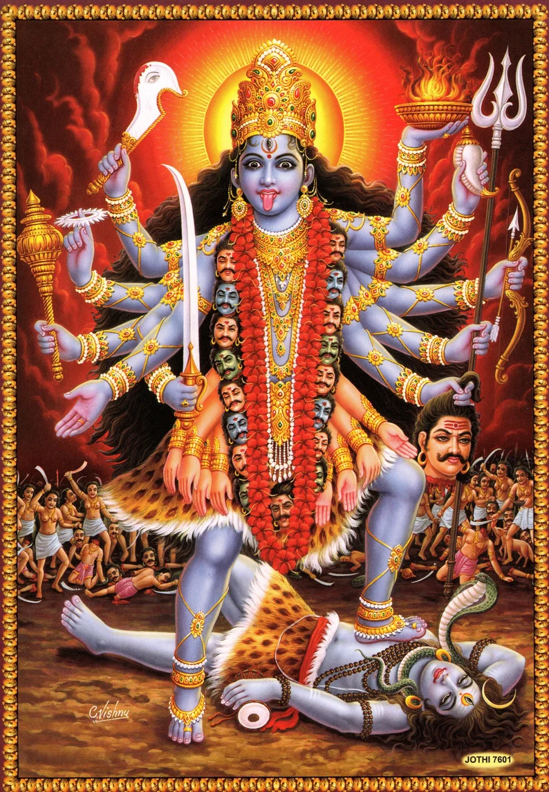

Dasha Mahavidhya
- Mata Mahakaali
- Maa Tara
- Mata Tripura Sundari
- Mata Bhuwaneshwari
- Mata Bhairavi
- Mata Chinnamasta
- Mata Dhumbawati
- Mata Bagalamukhi
- Mata Matangi
- Mata Kamala Devi
Maa Kaali
- Mata Bhadrakaali
- Mata Kapali
- Mata Ranakaali
- Mata Raktakaali
- Mata Dantakaali
- Mata Garamkaali
Asta Matrika
- Mata Barahi
- Mata Narashimhi
- Mata Vaishnavi
- Mata Maheshwari
- Mata Kalika
- Mata Brahmini
- Mata Kaumari
- Mata Indrayani
Maa Durga Bhawani
- Devi Bramhacharini
- Devi Skandamata
- Devi Chandraghanta
- Devi Kaalratri
- Devi Katyayani
- Devi Mahagauri
- Devi Shova Bhagwati
Nishan Devi Bhagawati
- Mata Mahakaali
- Mata Mahalaxmi
- Mata Mahasaraswati
Other Names
- Mata Satidevi
- Mata Parwati
- Mata Pathivara
- Mata Annapurna
- Mata Kamakhya
- Mata Sodashi
- Mata Lalita
- Mata Rajrajeshwari
- Mata Gayatri
- Mata Vishnumaya
- Mata Aadishakti
- Mata Jagadamba
- Mata Swasthani
- Mata Sansari Devi